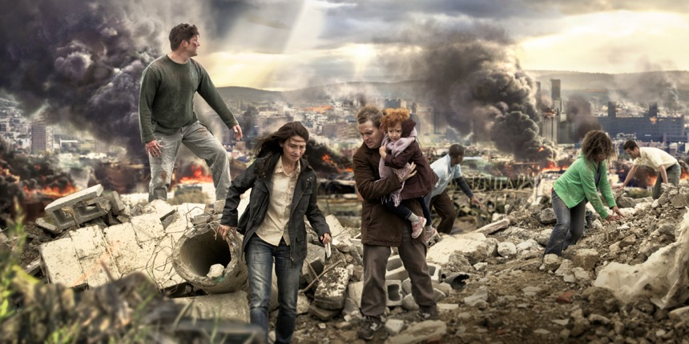

A Organização ensina que somente as Testemunhas de Jeová sobreviverão ao Armagedom, porque só elas têm apoio de Jeová, e são o único grupo que adoram ao Deus verdadeiro.
*** w89 1/9 p. 19 par. 7 Permanecendo organizados para a sobrevivência e entrada no milênio ***
“Apenas as Testemunhas de Jeová, os do restante ungido e os da “grande multidão”, qual organização unida sob a proteção do Organizador Supremo, têm esperança bíblica de sobreviver ao iminente fim deste sistema condenado, dominado por Satanás, o Diabo.

Capa de A Sentinela de 8 de Maio de 2015 (ver no jw.org)
Este artigo está dividido nas seguintes seções::
- Citações da Organização de que somente Testemunhas de Jeová sobreviverão ao Armagedom
- Desenvolvimento histórico mostrando quando a Organização introduziu este conceito
- Porque este ensinamento é injusto e ilógico
Um fluxo constante de conceitos sutis e citações diretas da Organização indicam que a salvação no Armagedom depende da Testemunha ativa de Jeová se associar com a Organização Torre de Vigia.
*** w83 15/9 p. 14 Poderá viver para sempre no paraíso na terra — mas como? ***
De modo similar, Jeová está usando hoje em dia apenas uma organização para realizar a Sua vontade. Para recebermos a vida eterna no Paraíso terrestre, precisaremos identificar essa organização e servir a Deus como parte dela.
*** w01 1/6 p. 16 par. 17 “Se Deus é por nós, quem será contra nós?” ***
Será que é presunção da parte das Testemunhas de Jeová dizer que só elas têm o apoio de Deus? Na realidade, não mais do que quando os israelitas no Egito afirmavam ter o apoio de Deus apesar do que os egípcios criam, ou quando os cristãos do primeiro século afirmavam que eles tinham o apoio de Deus, e não os religiosos judeus.
*** w06 15/5 p. 22 par. 8 Está preparado para a sobrevivência? ***
Durante o período final do “mundo antigo”, que pereceu no Dilúvio, Noé foi um fiel “pregador da justiça”. (2 Pedro 2:5) Nos atuais últimos dias deste sistema mundial, o povo de Jeová está divulgando os padrões justos de Deus e declarando as boas novas sobre a possibilidade de sobreviver para o novo mundo. (2 Pedro 3:9-13) Assim como Noé e sua fiel família foram preservados na arca, a sobrevivência de pessoas hoje depende de sua fé e de sua associação leal com a parte terrestre da organização universal de Jeová.
*** w14 15/8 pp. 21-22 ***
Jesus também transmite a voz de Jeová para nós à medida que orienta a congregação por meio do “escravo fiel e discreto”. (Mat. 24:45) Precisamos levar a sério essa orientação porque nossa vida eterna depende de nossa obediência.
A organização chegou ao ponto de dizer que bilhões tem prospectiva serem destruídos.
*** w93 1/10 p. 19 par. 14 ***
Há bilhões de pessoas que não conhecem Jeová. Muitas delas em ignorância praticam coisas que a Palavra de Deus mostra serem iníquas. Se persistirem nesse proceder, estarão entre as que perecerão na grande tribulação.
Os bilhões aniquilados no Armagedom perdem qualquer esperança de ressurreição; afirmam que a destruição deles é uma destruição eterna.
*** w90 15/4 p. 20 par. 14 Prepare-se para o livramento e a entrada num novo mundo ***
Sim, a destruição dos crassos pecadores nessas cidades foi eterna, como também o será a destruição dos iníquos no fim do atual sistema de coisas.
*** Nosso Ministério do Reino – km68, Março/1968, página 4 ***
A maioria das pessoas vivendo hoje em dia provavelmente estará viva quando o Armagedom começar, e não há esperança de ressurreição para aqueles que forem destruídos.
A organização raramente faz declarações tão audaciosas. Em vez disso, a destruição dos que não são Testemunhas de Jeová é descrita (com regularidade) em inúmeros termos mais sutis. As citações a seguir identificam as afirmações absurdas de que seguir a Bíblia, acreditar em Jesus e viver uma vida moralmente limpa não são o suficiente para a salvação. Somente sujeição à organização das Testemunhas de Jeová resulta em vida. Todos os [outros] cristãos são considerados membros da Cristandade e estão a caminho da destruição.
Deve-se notar que algumas Testemunhas de Jeová, inclusive Superintendentes de Circuito, se convenceram internamente de que a salvação não é exclusividade das Testemunhas de Jeová. Outros aliviam suas consciências e senso de justiça por dizer que muitos vão se juntar à organização de Deus um pouco antes do fim. As citações a seguir mostram que a organização não apoia essas ideias, mas ensina claramente que somente seus seguidores serão salvos.
Citações e Linhas de Raciocínio da Organização
Associação com a organização de Jeová
Adorar a “Jeová” e associar-se com a organização de Jeová – a Torre de Vigia – é colocado como essencial para a salvação.
*** A Sentinela edição de estudo, Junho/2016 p. 25-26 ***
Pior ainda seria deixar os erros de outros enfraquecer nossa fé e nos levar a abandonar a organização de Jeová. Se isso acontecesse, nós perderíamos o privilégio de fazer a vontade de Deus e a esperança de viver no novo mundo.*** A Sentinela de 1/5/2015 p.8 ***
Realmente, nossa sobrevivência envolve sermos fiéis a Jeová Deus e aprendermos que tipo de conduta e ações o agradam. (Sofonias 2:3) Em vez de seguirmos a maioria e ignorarmos os claros sinais de que estamos vivendo numa época importante, precisamos ‘ter bem em mente a presença do dia de Jeová’. As Testemunhas de Jeová podem mostrar a você na Bíblia como sobreviver a esse dia que está próximo.
*** w11 15/7 p. 18 par. 15 ***
Deixar de apoiar ativamente essa obra significa começar a seguir a Satanás. Não há meio-termo.
*** w07 15/12 p. 14 par. 19 ***
Contudo, os servos de Jeová já fazem parte da única organização que sobreviverá ao fim deste perverso sistema mundial.
*** w93 15/9 p. 22 ***
Mas, se nos afastarmos da organização de Jeová, não haverá outro lugar para ir em busca de salvação e verdadeira alegria.
*** km 4/93 p. 3 par. 6,7” ***
Encaminhe progressivamente os interessados durante os estudos bíblicos: O propósito primário dum estudo bíblico é ensinar a verdade da Palavra de Deus. Deve também criar no estudante apreço pela organização de Jeová e conscientizá-lo da necessidade vital de fazer parte dela. … O estudo bíblico semanal deve incluir instrução que ajude os estudantes a ter apreço pela organização e a tirar proveito das provisões para a salvação. Tome alguns minutos toda semana para relatar ou descrever algo sobre a organização e como ela funciona. Encontrará pontos úteis em A Sentinela de 1.° de julho de 1985. As brochuras As Testemunhas de Jeová no Século Vinte e As Testemunhas de Jeová — Unidas em Fazer Mundialmente a Vontade de Deus consideram os principais aspectos da organização e como estes podem beneficiar-nos. Providenciar que os estudantes da Bíblia assistam ao vídeo Testemunhas de Jeová — A Organização Que Leva o Nome lhes permitirá ver por si mesmos o que esta realiza.
*** km 11/90 p. 1 par. 1 Encaminhe os estudantes da Bíblia à Organização de Jeová ***
Tem de compreender que identificar-se com a organização de Jeová é essencial para a sua salvação.
*** w76 15/3 p. 177 par. 5 ***
Apenas as testemunhas cristãs de Jeová, que passarem com bom êxito por esta prova, sobreviverão e sairão como ouro refinado por fogo para uso de Deus na sua nova ordem preciosa.
*** yb82 p. 259 “O vosso labor não é em vão” ***
Neste estágio dos assuntos do homem é absolutamente impossível que alguém, quer professe ser cristão, quer não, fique independente da única organização que dá um testemunho mundial a respeito de Jeová, de sua bondade e supremacia, em harmonia com o Salmo 145, e de fato, de acordo com as Escrituras inteiras.
*** w82 15/7 p. 21 par. 18 ***
E embora o testemunho dado agora ainda inclua o convite de vir à organização de Jeová para a salvação, sem dúvida virá o tempo em que a mensagem assumirá um tom mais duro, igual a um “grande grito de guerra”.
“But Jehovah God has also provided his visible organization, his “faithful and discreet slave”, made up of spirit-anointed ones, to help Christians in all nations to understand and apply properly the Bible in their lives. Unless we are in touch with this channel of communication that God is using, we will not progress along the road to life, no matter how much Bible reading we do.” Watchtower1981 Nov 15 p.27
*** re cap. 20 p. 123 pars. 10-11 ***
Os desta grande multidão fazem hoje parte da única realmente unida organização plurinacional na Terra. Não têm normas diferentes em países diferentes, mas aplicam coerentemente os corretos princípios da Bíblia onde quer que vivam. Não se envolvem em movimentos nacionalistas, revolucionários, mas realmente ‘forjaram das espadas relhas de arado’. (Isaías 2:4) Não estão divididos em seitas ou denominações religiosas, propalando mensagens confusas e mutuamente contraditórias, assim como fazem as religiões da cristandade; nem deixam entregue a uma classe profissional de clérigos dar os louvores em seu lugar. Não clamam que devem a salvação ao espírito santo, porque não são servos dum deus trino. Em uns 200 territórios geográficos, em toda a Terra, estão unidos em invocar o nome de Jeová, falando a única língua pura da verdade. (Sofonias 3:9) Reconhecem corretamente, em público, que sua salvação procede de Jeová, o Deus de salvação, por meio de Jesus Cristo, Seu Agente Principal da salvação. — Salmo 3:8; Hebreus 2:10. A tecnologia moderna tem ajudado a fazer com que a voz alta da grande multidão unida soe ainda mais alta. Nenhum outro grupo religioso na Terra sente necessidade de publicar compêndios bíblicos em mais de 400 línguas, visto que nenhum outro grupo está interessado em alcançar todos os povos da Terra com uma só mensagem harmoniosa.
Para ser considerado parte dessa Organização, é obrigatório entregar relatórios de sua atuação como publicador ativo da organização Torre de Vigia.
*** w84 1/4 p. 10 par. 13 A divulgação de boas novas de algo melhor ***
À medida que esta guerra espiritual avançava, os que serviam junto com a organização de Jeová eram revigorados por contínuos lampejos de entendimento bíblico, e seu número aumentou até que, em 1938, 50.769 relataram serviço em favor do Reino durante um período de testemunho internacional.
*** w07 15/8 p. 26 par. 16 Jeová ama a justiça ***
E os que vão fazer parte do núcleo da “nova terra”, uma nova sociedade terrestre de amantes da justiça, estão sendo ajuntados nestes últimos dias. Já somam quase sete milhões de pessoas, em pelo menos 235 países e territórios e em cerca de cem mil congregações. Esses milhões de pessoas aprendem os caminhos justos e retos de Jeová, o que resulta numa fraternidade mundial unida pelo amor cristão. Sua união é a mais marcante e duradoura na história do mundo, uma união que excede qualquer coisa que os súditos de Satanás possam ter.
*** km de Fevereiro de 2008, página 6 (tradução minha do km em inglês) ***
Além disso, a assistência ao Memorial da Morte de Cristo no ano passado indica que uns 10 milhões de pessoas que não são Testemunhas de Jeová estavam interessadas nas boas novas o suficiente para comparecer a esta comemoração tão importante.
Crianças
As Testemunhas de Jeová consideram que as crianças compartilham dos pecados de seus pais, então bebês morrerão no armagedom se seus pais não forem considerados dignos de salvação.
*** Raciocínios – rs p. 47 Armagedom ***
Que acontecerá às criancinhas no Armagedom?
A Bíblia não responde diretamente a essa pergunta, e nós não somos os juízes. Entretanto, a Bíblia mostra positivamente que Deus considera as criancinhas dos verdadeiros cristãos como “santos”. (1 Cor. 7:14) Revela também que em tempos passados, quando Deus destruiu os maus, destruiu também da mesma forma as criancinhas deles.
*** w50 15/Nov p. 463 (em inglês, tradução minha) ***
As crianças são afetadas pelas ações dos seus pais, e os pais são avisados de que sua iniquidade é refletida em seus descendentes até a terceira e quarta gerações. (Êxodo 20:5,6) A bíblia ordena aos pais que instruam seus filhos nos caminhos de Deus, e se os pais se recusarem a acatar essa instrução divina nestes últimos dias, eles trarão destruição sobre si mesmos e sobre suas crianças pequenas no armagedom. (Deuteronômio 6:6,7; Efésios 6:4) De acordo com a Justiça Divina, Ele pode deixar tais crianças mortas, pois, como Ezequiel mostrou, todos morrem em suas iniquidades.
*** w68 1/2 p.83-84 (em inglês, tradução minha) ***
Todas as evidências indicam que este sistema está se apressando para seu confronto final com o Deus de Justiça no armagedom. Pais e filhos que não ganharem a “marca nas suas testas”, isto é, uma apreciação adequada dos padrões de moral de Deus, com certeza sofrerão. Pais prestarão contas pelos seus filhos, e crianças sofrerão pelo fracasso dos seus pais.
Pregação
A organização das Testemunhas de Jeová afirma que o trabalho de pregação é um requisito para a salvação.
*** km 6/12 p. 1 Doze motivos para pregar ***
Doze motivos para pregar
1. Ajuda a salvar vidas. …
7. É um requisito para nossa própria salvação.
Associação com os 144 mil
Uma afirmação similar é que a salvação vem da associação com o “pequeno rebanho”, que também afirmam representar o “restante dos 144 mil”, “os ungidos” e o “escravo fiel e discreto”. Para ser considerado de algum desses grupos, a pessoa deve ser parte dos que tomam dos emblemas do memorial, cujo número gira em torno de 9000 pessoas, atualmente.
*** w01 15/2 p. 14 par. 10 O dia do juízo de Jeová está próximo! ***
Na realidade, com o dia do juízo de Deus tão próximo hoje em dia, todo o mundo deveria ‘calar-se diante do Soberano Senhor Jeová’ e escutar o que ele diz por meio do “pequeno rebanho” dos seguidores ungidos de Jesus e dos companheiros deles, suas “outras ovelhas”. (Lucas 12:32; João 10:16) O aniquilamento aguarda a todos os que não querem escutar e que assim se opõem ao governo do Reino de Deus.*** wt cap. 13 p. 120 par. 1, 8, 10 ***
nestes últimos dias haveria “uma grande multidão”, composta de pessoas de todas as nações, cuja perspectiva seria viver para sempre na Terra sem precisar passar pela morte. Você está entre elas? … A grande multidão apóia o pequeno número dos que têm esperança celestial, os quais lideram a obra de pregação. … A Bíblia descreve os membros da grande multidão como marcados para a sobrevivência. (Ezequiel 9:4-6) “O sinal” é prova de que são dedicados a Jeová, batizados como discípulos de Jesus, e de que estão empenhados em cultivar a personalidade cristã.
*** w67 15/8 p. 499 (em inglês, tradução minha) ***
Portanto, a congregação visível do povo de Deus está relacionada à provisão da salvação hoje. De fato, tem um lugar importante nessa provisão. Toda congregação forma uma pequena parte do povo de Deus. Não podemos permanecer fora da organização do povo de Deus, separada dela, se quisermos ter a proteção de Jeová. O espírito de Jeová e seus anjos desejam a reunião e união de pensamento, mirar e agir. Então, há uma conexão vital entre a proteção de Jeová na cidade antitípica de refúgio e Sua congregação visível de Israelitas Espirituais, supervisionados pelo escravo fiel e discreto.
Quem estiver na “Babilônia” será destruído
Todos os que fizeram parte de outras religiões, chamadas de “Babilônia, a Grande“, não sobreviverá, mas vai “compartilhar nas suas pragas”. Essa porta estreita exclui a Cristandade também, assim como as outras grandes doutrinas religiosas.
*** w05 1/10 p. 24 par. 17 ‘Mantenha-se vigilante’ — já chegou a hora do julgamento ***
Esse não é o fim do julgamento de Deus contra Babilônia, a Grande. A destruição total dela está muito próxima. (Revelação 18:21) Com boa razão, a Bíblia exorta pessoas em toda parte: “Saí dela [Babilônia, a Grande] . . . se não quiserdes compartilhar com ela nos seus pecados.” (Revelação 18:4, 5) Como é que se sai de Babilônia, a Grande? Isso significa mais do que apenas cortar os laços com a religião falsa. A influência babilônica está presente em muitas celebrações e costumes populares, na atitude permissiva do mundo em relação ao sexo, na promoção de diversões que envolvem espiritismo, e muito mais. Para nos manter vigilantes, é essencial que, tanto em nossas ações como nos desejos do coração, deixemos claro que estamos separados de Babilônia, a Grande, em todos os sentidos.
*** w00 1/2 p. 22 par. 12 Alegramo-nos com o Deus da nossa salvação ***
Ainda assim, Jeová não destruirá indiscriminadamente. Alguns humanos serão salvos. “Saíste para a salvação do teu povo, para salvar o teu ungido”, diz Habacuque 3:13. Deveras, Jeová salvará os seus fiéis servos ungidos. A destruição de Babilônia, a Grande, o império mundial da religião falsa, será então completa. No entanto, atualmente, as nações procuram eliminar a adoração pura. Dentro em breve, os servos de Jeová serão atacados pelas forças de Gogue de Magogue.
*** w76 15/3 p. 179 par. 12 A espécie de pessoas aprovadas para a Nova Ordem de Deus ***
Reconheçamos que a cristandade está condenada, junto com todo o restante de Babilônia, a Grande. Ela se negou a se arrepender de seu proceder religiosamente imoral ou adúltero, de sua amizade com este mundo. (Tia. 4:4) É igual ao restante do mundo ímpio, mesmo depois de as testemunhas cristãs de Jeová terem proclamado explicitamente o iminente julgamento de Deus contra ela.
*** w85 1/6 p. 22 par. 8 Por que não devemos fazer parte deste mundo ***
Sem dúvida, a execução do julgamento divino sobre a cristandade apóstata e o restante do mundo de Satanás é iminente.
*** w86 15/1 p. 12 par. 9 “Esforçai-vos vigorosamente” ***
A porta estreita que conduz à salvação está aberta a todos. Mas os “muitos” não gostam de pelejar para entrar. Quais são alguns dos fatores envolvidos em se passar pela porta estreita, que exigem um esforço vigoroso? A pessoa precisa primeiro obter conhecimento exato da verdade bíblica, e vir a conhecer a Jeová Deus e a Cristo Jesus. (João 17:3) Isto significa largar as tradições e as práticas de religiões do mundo, inclusive as da cristandade. Exige fazer a vontade de Deus, como Jesus fez quando esteve na terra. (1 Pedro 2:21) Qual cristão dedicado e batizado, deve-se também evitar o materialismo, a imoralidade e as impurezas do mundo.
Cabritos serão destruídos
*** ka cap. 15 p. 284 par. 2, 5 Por que os caprinos deixam de herdar o Reino ***
O Diabo não está do lado de Jesus, e por isso, os caprinos que não fazem nada em ajuda do Rei reinante Jesus Cristo são contra ele e estão do lado do Diabo. Não há lugar neutro no tempo da presença ou parusia de Cristo. … São amaldiçoados assim como Satanás, o Diabo, e seus demônios são. Portanto, merecem um futuro eterno semelhante ao do Diabo e de seus anjos: “o fogo eterno, preparado para o Diabo e seus anjos”.
A Arca de Noé Representa a Organização
A organização das Testemunhas de Jeová ensina que, há pouco mais de 4000 anos houve um dilúvio global, cobrindo os cumes de todas as montanhas com água. Toda a vida animal e humana morreu, exceto aqueles dentro da arca. A salvação de Noé na arca representa o batismo como parte da organização de Jeová. Fazer parte da organização hoje é, para a salvação, tão crítico quanto entrar na arca de Noé.
*** w92 1/10 p. 23 ‘Devo ser batizado?’ ***
O tempo se esgota. Vidas, inclusive a sua, estão em jogo. É urgente que cogite seriamente o assunto de dedicar-se a Jeová e de simbolizar essa dedicação pelo batismo em água. O apóstolo Pedro frisou isso, dizendo: “Isso salva-vos também agora, a saber, o batismo.” Ele explicou também que o batismo “não [é] a eliminação da sujeira da carne” (a pessoa já terá feito isso antes de habilitar-se para o batismo), “mas [sim] a solicitação de uma boa consciência, feita a Deus”.
*** pe cap. 30 p. 255 par. 14 O que você precisa fazer a fim de viver para sempre ***
Não conclua que existem várias estradas, ou caminhos, que poderá utilizar para ganhar a vida no novo sistema de Deus. Existe apenas uma. Foi apenas aquela única arca que sobreviveu ao Dilúvio e não um sem-número de embarcações. E haverá apenas uma organização — a organização visível de Deus — que sobreviverá à “grande tribulação” que rapidamente se aproxima. Simplesmente não é verdade que todas as religiões conduzem ao mesmo fim. (Mateus 7:21-23; 24:21) Você precisa pertencer à organização de Jeová e fazer a vontade de Deus, a fim de receber Sua bênção de vida eterna.
*** wt cap. 12 pp. 115-116 pars. 11-12 O significado de seu batismo ***
Esse “um só batismo” aplica-se a todos os que se tornam cristãos verdadeiros. No batismo, eles se tornam testemunhas cristãs de Jeová, ministros de Deus, ordenados. — Efésios 4:5; 2 Coríntios 6:3, 4.
12 Esse batismo tem grande valor de salvação aos olhos de Deus. Por exemplo, depois de mencionar a construção da arca, na qual Noé e sua família foram preservados no Dilúvio, o apóstolo Pedro escreveu: “O que corresponde a isso salva-vos também agora, a saber, o batismo, (não a eliminação da sujeira da carne, mas a solicitação de uma boa consciência, feita a Deus,) pela ressurreição de Jesus Cristo.”
*** w91 15/9 p. 17 par. 12 “Ajuda-me onde necessito de fé!” ***
Para garantir a salvação, Noé e sua família tinham de exercer fé. Isto significava seguir instruções e os ditames do espírito santo de Deus. Durante a grande tribulação, será igualmente imperativo que sigamos os ditames do espírito santo e obedeçamos as instruções que Jeová dará por meio de sua organização.
A palavra “Jeová” é um requisito
Usar a palavra “Jeová” é essencial para a salvação.
*** w98 1/5 pp. 18-19 par. 17 Quem ‘se salvará’? ***
Atualmente, acontecimentos igualmente aterrorizantes são iminentes, quando todo este sistema mundial de coisas for destruído pela mão de Jeová. Mesmo assim, é possível escapar disso. A profecia prossegue, dizendo: “Terá de acontecer que todo aquele que invocar o nome de Jeová salvar-se-á; pois no monte Sião e em Jerusalém virão a estar os que escaparam, assim como Jeová disse, e entre os sobreviventes que Jeová está chamando.” (Joel 2:32) As Testemunhas de Jeová são realmente gratas por conhecer o nome de Jeová, e têm plena confiança em que ele as salvará quando o invocarem.
Isto pode até parecer lógico quando se lê citações de textos da Tradução do Novo Mundo das Escrituras Sagradas, mas ao tomar conhecimento de que a palavra “Jeová” nunca aparece no Novo Testamento e foi falsamente adicionada na Tradução do Novo Mundo, percebe-se que esse raciocínio é falso.
Armagedom
*** From Kurukshetra to Armageddon – and Your Survival p.17-19 (CD-ROM em inglês apenas) ***
Dessa descrição histórica do Armagedom, a Bíblia diz: ‘Pois assim como eram os dias de Noé, assim será a presença do Filho do homem. Porque assim como eles eram naqueles dias antes do dilúvio, comendo e bebendo, os homens casando-se e as mulheres sendo dadas em casamento, até o dia em que Noé entrou na arca, e não fizeram caso, até que veio o dilúvio e os varreu a todos, assim será a presença do Filho do homem.’ (Mateus 24:37-39) Então, as circunstâncias relacionadas ao fim da nossa ordem mundial no Armagedom serão similares àquelas relacionadas ao antigo Dilúvio. Elas serão: (1) O planeta Terra e a vida animal sobreviverão; (2) a importância dos nossos temos é ignorada pela maioria das pessoas por causa das preocupações com os problemas normais da vida; (3) a maioria da humanidade não faz caso do aviso divino do Armagedom; (4) portanto, a maioria da humanidade será destruída no Armagedom; e (5) somente uma pequena minoria da humanidade achará favor de Deus e sobreviverá à “guerra do grande dia do Deus Todo-Poderoso”.
*** You May Survive Armageddon Into God’s New World 1955 pp.340-342 (tradução minha) ***
Porque seria justo derramar o sangue de mais de 2 bilhões de pessoas [população mundial em 1955]? … Como os membros da ‘geração que não passará’ antes do Armagedom estão chegando ao número de 2.5 bilhões, e como só o restante ungido e um grupo maior de “outras ovelhas” sobreviverão dentro da Grande Arca de Noé, a taxa de mortalidade da “guerra do grande dia do Deus Todo-Poderoso” será terrivelmente sem precedentes, gerando muitos corpos para os sobreviventes do Armagedom enterrarem. Venham, pássaros e feras! Alimentem-se dos corpos humanos, em retribuição pelas mortes arbitrárias causadas aos animais e pássaros pela humanidade culpada!
*** w58 15/10 p. 614, 615 (em inglês, tradução minha) ***
Quanto aos humanos na Terra, todos os dedicados a Jeová e seguindo a Jesus Cristo estarão do lado de Jeová; comparados aos bilhões da Terra, eles são realmente poucos… Do lado de Satanás estará todo o restante da humanidade, mais que 99,9%, porque a Bíblia diz: “O mundo inteiro jaz no poder do iníquo”. Isso inclui todos os governos do mundo e seus apoiadores, as instituições comerciais, religiosas e políticas… O Armagedom será a pior catástrofe que já atingiu a Terra na história da humanidade.*** w65 1/4 p. 212 (em inglês, tradução minha) ***
Sim, hoje, com o Armagedom nos encarando, devemos manter na mente o pensamento sóbrio de que milhões ou bilhões de vidas podem ter um fim rápido e decisivo em breve, colocando seus donos além do alcance de qualquer expressão de amor da nossa parte.
*** w51 15/7 p. 446 (em inglês, tradução minha) ***
O que isso significa para nós, hoje, é que aqueles que vivem hoje nesse tempo de julgamento e que não tomam posição a favor de Jeová por uma razão ou outra, serão mortos por Ele na batalha do Armagedom e não ficarão em Sua memória para uma ressurreição. E esse grupo incluirá a maioria dos humanos que vivem hoje na Terra, conforme nos mostra Jeremias 25:33: “‘E naquele dia os mortos por Jeová ficarão espalhados de uma extremidade da terra à outra extremidade da terra. Não serão lamentados, nem recolhidos, nem enterrados. Eles se tornarão como estrume sobre o solo.’”.
Desenvolvimento da Torre de Vigia
Imagine, por um segundo, que a Torre de Vigia não é a religião verdadeira. Você acha que seria justo Deus te destruir porque as circunstâncias o levaram a se envolver com a religião errada?
Será que um Deus amoroso estaria planejando entregar bilhões de pessoas a uma morte violenta e eterna? Um Deus que está disposto a decepar bilhões de pessoas certamente não é o Deus que Russell descreveu quando começou o movimento dos Estudantes da Bíblia. Russell saiu dos Presbiterianos porque ele não podia acreditar na injustiça de um Deus disposto a destruir a maioria da humanidade.
*** Suplemento à Zion’s Watchtower and Herald of Christ’s Presence, de Junho de 1879 ***
Nós pensamos que, se a vinda de Cristo deveria acabar com a experiência e trazer ruína irrevogável sobre 99% da humanidade, então isso jamais poderia ser considerado desejável, e não poderíamos orar com um espírito apropriado: “Venha, Senhor Jesus, venha rápido.”
Similarmente, Russell não conseguia aceitar a salvação apenas para os Adventistas:
*** Proclamadores – jv cap. 5 p. 45 A proclamação da volta do Senhor (1870-1914) ***
Russell escreveu: “Ficamos bastante contristados com o erro dos adventistas que esperavam Cristo na carne e ensinavam que o mundo e todos nele, exceto os adventistas, seriam queimados.”
Sob a liderança de Russell, a organização costumava ensinar que, independentemente da religião, a maioria das pessoas sobreviveria ao Armagedom. Seu entendimento sobre a “futura provação” era de que as massas da humanidade sobreviveriam ao Armagedom e seriam educadas na Terra por Cristo no reino de 1000 anos, antes de receberem um julgamento. A ressurreição era para todos que haviam morrido, inclusive Adão. No entanto, a religião que ele fundou agora afirma que até mais que 99% da humanidade será destruída. Globalmente, há apenas cerca de 1 Testemunha de Jeová para cada 1000 pessoas na Terra. Portanto, de acordo com as estatísticas atuais, a Organização ensina que não apenas 99% serão destruídos, mas 99,9%.
Foi durante a liderança de Rutherford que os ensinos da “ruína irrevogável” e “períodos de julgamento” foram introduzidos – conceitos estes que Russell tentou evitar. A revista A Sentinela de 1923, páginas 310-311, mostrava que o clero não seria salvo. Em 1930, pp.275-281, Rutherford introduziu a ideia de que as pessoas que discordavam dele, apóstatas, estariam rumo à destruição eterna. A Sentinela de 1939, páginas 170 afirmava que aqueles que passaram por períodos anteriores de julgamento, tais como Sodoma e Gomorra, Adão e Eva, Salomão e os escribas e fariseus, não seriam ressuscitados.
A liderança posterior não fez esforços de suavizar a linha dura de Rutherford. Espera-se que as Testemunhas de Jeová se alegrem com a destruição da humanidade no Armagedom.
*** w77 1/12 p. 729 ***
No futuro próximo, esta geração presenciará a predita “grande tribulação”, que causará o fim deste atual sistema iníquo. (Mat. 24:21) Nesse tempo, nenhum dos servos fiéis de Jeová, os únicos que sobreviverão, lamentará a destruição dos iníquos. Ao contrário, alegrar-se-ão, assim como Moisés e seu povo se alegraram com a destruição de Faraó e seu exército.
Em 1986, quem discordasse que Deus destruirá “milhões” (ou, mais precisamente, “bilhões”) era classificado como opositor.
*** w86 15/3 p. 19 par. 14 Não dê margem ao Diabo! ***
Alguns opositores afirmam […] que Deus é tão misericordioso, que certamente não causará a morte de tantos milhões de pessoas durante a “grande tribulação”, então tal pessoa já preparou seu coração para escutar tal crítica. — 2 Timóteo 3:1; Mateus 24:21.
A Organização faz questão de esclarecer que muitos não se juntariam ao rebanho da Organização no inicio da Grande Tribulação.
*** w82 15/7 p. 17 par. 3, 4 ‘Fique desperto e mantenha os sentidos’ ***
Todo aquele que quiser sobreviver para a nova ordem justa de Deus precisa entrar agora urgentemente numa relação correta com Jeová e Sua organização terrestre. … Por que há tal urgência de se chegar à verdadeira adoração de Jeová agora? Não poderia aquele que é sincero esperar até ver realmente o começo dos julgamentos executores de Jeová, passando-se então depressa ao lado Dele? Embora isso possa parecer atraente a alguns, haveria então tempo suficiente para estabelecer uma relação correta com Jeová? A evidência das Escrituras responde que não.*** w97 15/2 p. 29 Perguntas dos Leitores ***
“A Sentinela” de 15 de agosto de 1996 disse: “Na parte final da tribulação, será salva a ‘carne’ que tiver fugido para o lado de Jeová.” Sugere isso que, depois da primeira fase da grande tribulação, muitos novos passarão para o lado de Deus? Não foi isto o que se indicou ali. […] Quanto à questão de se alguns novos poderão aprender a verdade e passar para o lado de Deus após o começo da grande tribulação, note as palavras de Jesus registradas em Mateus 24:29-31. Após o irrompimento da tribulação, aparecerá o sinal do Filho do homem. Jesus disse que todas as tribos da Terra se baterão em lamento. Ele não falou nada sobre pessoas acordarem para a situação, se arrependerem, passarem para o lado de Deus e se tornarem verdadeiros discípulos. De forma similar, na parábola das ovelhas e dos cabritos, o Filho do homem aparece e separa judicialmente as pessoas à base do que tinham ou não tinham feito no passado. Jesus não falou nada sobre pessoas que por muito tempo demonstraram atributos caprinos de repente se converterem e se tornarem como ovelhas. Ele vem para julgar à base do que as pessoas já haviam mostrado ser.
Veja, nos 2 artigos a seguir, instruções de como uma Testemunha de Jeová deve responder à pergunta “Acreditam que são os únicos a serem salvos?”. A instrução é de que evitem dizer que só as Testemunhas de Jeová serão salvas. É recomendável dizer NÃO, mesmo que a explicação dada mostra que a resposta é “sim”. Depois de se ler o parágrafo inteiro, fica claro o que ele realmente quer dizer:
*** Testemunhas de Jeová — Quem São? Em Que Crêem? – jt p. 29 ***
Acreditam que são os únicos a serem salvos? Não. Milhões dos que viveram nos séculos passados, que não eram Testemunhas de Jeová, voltarão na ressurreição e terão a oportunidade de viver. Muitos dos que agora vivem ainda poderão tomar posição a favor da verdade e da justiça, antes da “grande tribulação”, e estes obterão a salvação.*** w70 15/10 p. 630 Perguntas que as pessoas fazem sobre as Testemunhas de Jeová ***
Crêem as testemunhas de Jeová que só elas serão salvas? […] As testemunhas de Jeová crêem que se salvarão muitos que agora não são testemunhas de Jeová. Mas, com respeito à vindoura “grande tribulação” e a passar a salvo através deste conflito, a Bíblia mostra que as pessoas precisam agora voltar-se para Deus e tomar sua posição ao lado dele, se quiserem ter a proteção dele. Jesus disse: “Assim como eram os dias de Noé, assim será a presença do Filho do homem. . . . não fizeram caso, até que veio o dilúvio e os varreu a todos, assim será a presença do Filho do homem.” (Mat. 24:21, 37-39) Noé e sua família, porém, passaram a salvo através do Dilúvio, porque serviam a Jeová Deus. Todos os outros foram destruídos. Jesus disse que isto é o que acontecerá na vindoura “grande tribulação”, e as testemunhas de Jeová crêem nisso.
Essa doutrina é justa?
“A religião de um homem é um acidente histórico, tanto quanto a língua que ele fala.” – George Santayana, ‘Life of Reason’ – Volume ‘Reason in Religion’ página 5.
Existem 12 religiões clássicas mundiais, e mais de 34 mil seitas cristãs [1]. A maioria destas diz que, para ser salvo, você deve seguir o mesmo Deus. As seitas mais extremistas dizem que pertencer à mesma seita específica é um requisito para a salvação. Se você for Testemunha de Jeová, imagine por um segundo que a Organização da Torre de Vigia não é a religião verdadeira. Você acha justo Deus te destruir por fazer parte da religião errada? Visto que a organização desencoraja examinar ativamente outras crenças, seria justo que você morresse por não ter encontrado a correta?
Será que a Testemunha de Jeová que escuta música pop imoral é mais justa do que um missionário Batista na Indonésia? Será que o monge, no Nepal, isolado do mundo e da Bíblia, deveria ser destruído por viver uma vida de abstinência, que lhe ensinaram e que ele realmente acreditava ser o caminho pra alcançar a união com Deus?
Quando uma religião ensina verdades absolutas, faz sentido acreditar que todos os que não acreditam nessas verdades estão adorando falsidades. Quem não estiver adorando a Jeová, está adorando Satanás, e merece destruição por isso. Se a verdade é fácil de entender e Deus atrai suas ovelhas, não há desculpa para não segui-la. A falha nesse raciocínio é que nenhuma organização ensina verdades absolutas. As Testemunhas de Jeová certamente não ensinam. Em sua curta história de 130 anos, a Organização das Testemunhas de Jeová mudou seus ensinamentos tão profundamente que eles não têm o direito de dizer que possuem uma habilidade exclusiva de entender a verdade. É ilógico afirmar que Deus deu a Russell tanto ensinamentos errados que a Organização precisou rejeitar depois.
Nos tempos bíblicos, Deus indicava quem Ele usava através de sinais poderosos. Ele falou diretamente com Abraão e forneceu milagres poderosos por meio de Moisés. Os cristãos do primeiro século testemunharam Deus falando pessoalmente ao dar sua aprovação ao seu filho, e assistiram Jesus curar os doentes e ressuscitar mortos. Os apóstolos e outros cristãos continuaram a mostrar essas obras poderosas. As Testemunhas de Jeová nunca produziram sequer um sinal poderoso para ajudar a identificá-las como organização aprovada dos nossos tempos.
O problema de dizer que a salvação depende de pertencer a uma única religião pequena é que a Organização Torre de Vigia não está acessível para uma grande parte do mundo. Boa parte do mundo nem tem acesso à Bíblia.
Segundo o site Mapas da Guerra, mais da metade do mundo não é de cristãos. Logo, a chance de ser uma Testemunha de Jeová depende muito de viver num pais que foi conquistado ou convertido ao cristianismo nos últimos 2000 anos.
Ser Testemunha de Jeová depende de onde se nasce, e milhões de pessoas nunca ouvirão o nome Jeová ou Jesus. Um exemplo é se alguém nascer em um desses países: Bangladesh, Camboja, China, Índia, Mali, Nepal, Níger, Paquistão, Tailândia e Turquia. Só eles abrigam aproximadamente metade da população mundial. O Relatório de Serviço de 2006, da Organização, diz que, nesses países, há menos de 40 mil Testemunhas de Jeová, no total. Isso não corresponde a nem mesmo 1 Testemunha para cada 70.000 pessoas. Esses países representam muitas religiões (Muçulmanos, ateus, budistas e hindus) e grupos étnicos (africanos, indianos, asiáticos, europeus), o que mostra que nenhum grupo específico é pré-disposto geneticamente a ser “similar a cabrito”. No Paquistão e em Bangladesh, praticamente todos serão destruídos, porque há menos de 1 Testemunha pra cada 1 milhão de pessoas. Em 2006, não havia nem mesmo uma única Testemunha de Jeová no Afeganistão. Seria justo pessoas que nunca nem mesmo ouviram o nome Jeová serem destruídas no Armagedom?
O relatório de publicadores de 2011 lista “30 outros países”, onde onde as Testemunhas de Jeová são banidas. Destacado em vermelho na figura acima, esses países somam juntos 16% da área da superfície do planeta, e correspondem a cerca de 2 bilhões de pessoas [estes números podem estar desatualizados], ou 27% da população da Terra. Apesar do tamanho desse grupo, em 2014 o número de publicadores chegou a apenas 26.272 em todos eles combinados, o que é menos de 1 para cada 72 mil pessoas.
Pessoas de outras religiões são tão devotas quanto as Testemunhas de Jeová. “Kumbh Mela” é um destino de peregrinação Hindu para se banhar num rio sagrado que recebeu 100 milhões de pessoas em 2013. A maioria destas pessoas nunca ouvirá de Jesus, muito menos das Testemunhas de Jeová.
Mesmo em países cristãos, é ilógico pensar que Deus destruirá pessoas por entenderem a Bíblia de maneira diferente das Testemunhas de Jeová. Se alguém ler a Bíblia sem a ajuda das publicações da Torre de Vigia, jamais chegará à verdade atual da Organização:
*** w83 15/7 p. 27 par. 20 ***
Se chegamos a pensar que sabemos mais que a organização, devemos perguntar-nos: “Onde é que aprendemos a verdade da Bíblia? Conheceríamos o caminho da verdade se não tivesse havido a ajuda da organização? Podemos realmente passar sem a orientação da organização de Deus?” Não, não podemos!
Parece loucura uma religião dizer que somente seus seguidores merecem salvação? Seriam pretensiosos os 11 seguidores da seita da Sra. Marian Keech, que acreditavam que OVNIs com alienígenas destruiriam a todos, com exceção deles? Que dizer das Testemunhas de Jeová dizendo que Deus vai salvar alguns poucos milhões dos seus membros, e destruir todos os outros bilhões de habitantes da Terra? Seria lógico acreditar que mesmo uma religião com 1 bilhão de membros seria a correta, se isso significasse a destruição de 7 outros bilhões de pessoas? Acreditar que Deus só aceitaria uma religião, independente do tamanho, não parece justo.
Somente um pequeno percentual das pessoas acabam se convertendo para outras religiões, e não se convertem todos para uma única religião do mundo. As suas opções são aquelas que aparecem para eles naquele momento de suas vidas. É questão e oportunidade e imprevisto. Uma pesquisa sobre religiões da América feita pela da ARIS (American Religious Identification Survey) mostra que 84% dos adultos americanos mantém a mesma religião durante a vida toda. Dos 16% que mudam de religião, a maior parte larga todas as religiões. “Alguns grupos tais como Mórmons e Testemunhas de Jeová atraem um grande número de convertidos, mas também perdem um número igualmente grande de pessoas (apóstatas)”. As 1.2 bilhões de horas de pregação das Testemunhas de Jeová em 2004 resultaram em apenas 200 mil batismos, dos quais metade eram provavelmente adolescentes criados nessa religião. Mudar a religião de nascença de uma pessoa não é uma tarefa fácil.
No 11 de Setembro de 2001, o mundo assistiu o horror das torres gêmeas de Nova York caindo, matando muitos milhares de pessoas por causa, em parte, de desacordos de fundamento religioso. Ainda assim, isso não é nada quando comparado à destruição que Jeová deve trazer para bilhões de pessoas que talvez nunca tenham nem visto a bíblia. Se a morte em vão de alguns milhares de pessoas feriu o senso de justiça de tanta gente, imagine um decepamento global descrito pela Organização Torre de Vigia e ansiosamente esperado pelas Testemunhas de Jeová!
Incoerentemente, o Armagedom vai resultar na destruição eterna de bilhões de “malfeitores” que não adoram a Jeová, e ao mesmo tempo possibilitará a ressurreição de bilhões de “malfeitores” que não adoravam a Jeová no passado. A maioria de ambos os grupos nunca nem ouviu de Jeová. Então, qual a diferença entre os 2 grupos? O que faz um grupo merecer a vida menos que o outro? Não há muita diferença. Trata-se apenas da tentativa de uma organização fazer crescer o número dos seus adeptos.
Com uma presunção sem lógica, os membros de muitas religiões acreditam que só eles pertencem à única fé verdadeira. Será que eles acreditam que a sorte que bateu em suas portas com essa verdade? Ou que nasceram com essa sorte? Será que possuem uma mente mais inteligente ou perceptiva? Será que a condição de seus corações é tão superior à dos outros que Deus e seus anjos resolveram guiá-los à única religião verdadeira? A raiz desse pensamento é o orgulho dos líderes religiosos que se aproveitam da inocência dos seguidores; seguidores que estão satisfeitos em aceitar tudo que lhe ensinem, seja que existem muitos caminhos para a salvação, seja que só eles merecem a salvação.
O vídeo abaixo contém uma gravação de um discurso proferido por um betelita em 2007, chamado Ciro Aulicino, que descreve graficamente o massacre que as Testemunhas de Jeová esperam ansiosamente.
Notas de rodapé
[1] David B. Barrett, et al., “World Christian Encyclopedia : A Comparative Survey of Churches and Religions in the Modern World,” Oxford University Press, (2001).
Barrett lista 19 religiões mundiais principais, subdivididas em 270 grandes grupos. Ele identificou 34 mil grupos separatistas dentro do cristianismo apenas. Ele comenta que “religiões distintas cresceram de 1 mil em 1900 para 10.500 hoje, com probabilidade de aumentar para 15 mil em 25 anos.
As 12 religiões clássicas do mundo são:
- Baha’i
- budismo
- cristianismo
- confucionismo
- hinduismo
- islamismo
- jainismo
- judaísmo
- Xintoísmo
- siquismo
- taoísmo
- zoroastrismo